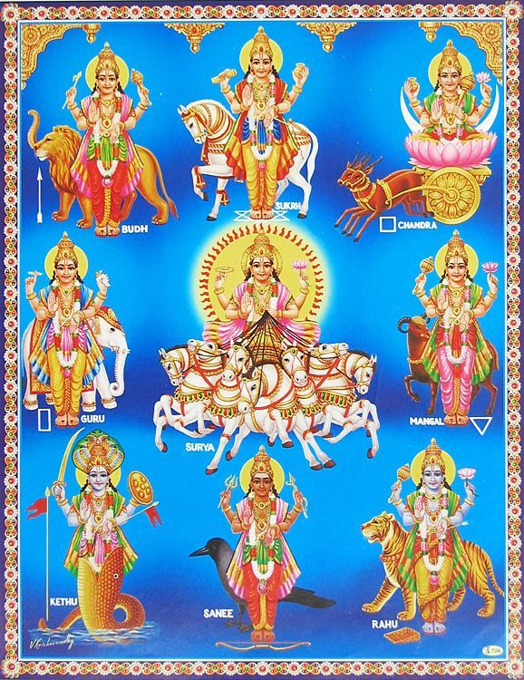

☊ இராகு
ஜோதிடத்தில் கிரகம், இராசி மற்றும் பாவகம் ஆகிய மூன்றின் குணங்கள் பண்புகள் மற்றும் செயல்பாடுகளை உணர்ந்து அறிந்தவர்கள் நல்ல ஜோதிடராக வலம் வர முடியும். கிரகங்கள் ஒருவரின் குணங்களையும் பண்பையும் வெளிப்படுத்தும். ஒரு கிரகத்துடன் மற்றொரு கிரகம் சேரும்போது அதன் குணங்கள் வேறுபடுவதை உணரலாம். உதாரணமாக தண்ணீருடன் எலுமிச்சை சாறு கலப்பது போல், ஒரு கிரகம் மற்றொரு கிரகத்துடன் இணையும்போது அதனுடைய குணங்களும் பண்புகளும் மாறுபடும். இங்கு தற்போது தனிப்பட்ட கிரகங்களின் குணங்களையும் பண்புகளையும் பார்ப்போம். இதனை ஜோதிடத்தில் கிரக காரகத்துவம் என்று கூறுவார்கள்.

இராகுவின் காரகத்துவங்களை பார்ப்போம்:
- தந்தை வழி தாத்தா பாட்டி
- அந்நியர்கள்
- புதியவர்கள்
- மாமிசம் உண்பவர்கள்
- மலைவாசி
- கெட்டவர்கள்
- திருடர்கள்
- பயில்வான்
- கோமேதகம்
- உளுந்து
- கருப்பு நிறம்
- கருங்கல்
- சினிமா
- நவீன பொருட்கள்
- பாம்பு
- விஷம்
- வெளிநோய்
- தொழிற்சாலை
- சிறைத்தண்டனை
- குலத்தை கெடுக்கும் தொழில்
- இழி தொழில்
- வேடிக்கை வினோத செயல்கள்
- விஷ நோய்கள்
- ஓய்வு
- குடல்
- உடல் ஊணம்
- மயக்கம்
- குன்ம நோய்
- குடல் நோய்
- வெளிநாட்டு தொடர்புகள்
- பேராசை
- வெளிநாட்டு தாக்கம்
- புதுமை
- சுதந்திரம்
- புகழ்
- மாயை
- சூழ்ச்சி
- திடீர் நிகழ்வுகள்
- புரட்சித்தன்மை
- குழப்பம்
- இலட்சியம்
- தொழில்நுட்பம்
- அடிமைத்தன்மை
- மக்கள் ஊடகம்
- இரகசியமான ஆன்மீகம்
- இரகசிய செயல்கள்
- மரபுகளை உடைத்தல்
- மக்களிடையே பிரச்சாரம்
- உலகமயமாக்கல்
- வித்தியாசம்
- சீரற்ற வேலை
- கட்டுப்படுத்த முடியாத ஆசை
- பாரம்பரியத்தில் இருந்து பிரிவு
- முரண்பாடான நடத்தை
- அதிகார ஆர்வம்
- அபாயம் எடுப்பது
- சர்ச்சைகள்
- மறைவான தன்மை
- உலகளாவிய தாக்கம்
- மறைவான திட்டங்கள்
- திடீர் உயர்வு மற்றும் வீழ்ச்சி
- திடீர் தத்துவம்
- நிலை மாற்றம்
- தடைமிக்க பழக்கவழக்கங்கள்
- ஆடம்பரம்
- எல்லைகளை உடைத்தல்
- பழகும் தன்மை
- மத மாற்றம்
- அந்நிய நாடு செல்லுதல்
- நாடு கடத்தப்படுதல்
- தோல்
- அலர்ஜி
- சொரி சிரங்கு
- குழிகள்
- பொந்துகள்
- படரும் செடிகள்
- மனித முகம் இல்லாத தெய்வங்கள்
- உடலில் ஒரு பகுதியுடன் இருக்கும் தெய்வங்கள்
- துர்க்கை
- மின்னக்கூடிய பொருட்கள்
- வட்டி தொழில்
- அடகு பிடித்தல்
- நிழல் தொழில்
- ஜோதிடம்
- ஆகாய விமானம்
- ஆராய்ச்சி
- மின்சார சம்பந்தமான தொழில்கள்
- புதிதாக கண்டுபிடித்தல்
- மந்திர வித்தை
- அலைந்து செய்யும் தொழில்
- ஏமாற்றுதல்
- ஜால வித்தைகள்
- அரசுக்கு விரோதமான தொழில்கள்
- கடத்தல்
- ஏற்றுமதி இறக்குமதி
- வெளிநாட்டிற்கு ஆட்களை அனுப்பும் ஏஜென்சி
இதுபோல் இன்னும் எண்ணற்ற காரகத்துவங்கள் இராகுவிற்கு உள்ளது.
← முகப்பு